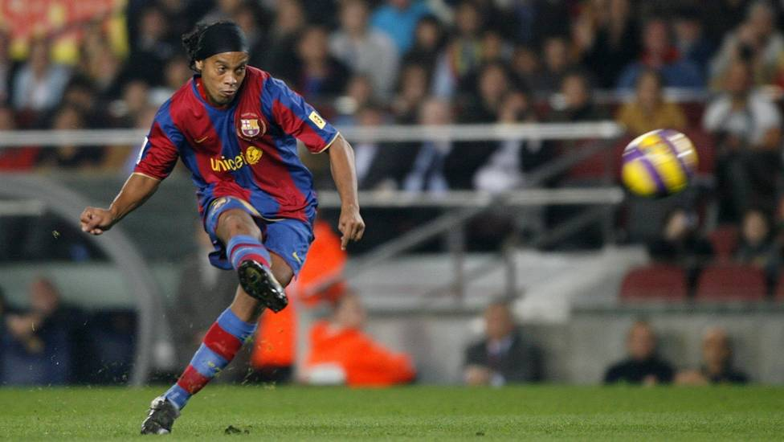

Ronaldo de Assis Moreira - "Ronaldinho"
The Legend that enchanted in football

- 1980 - Born on March 21, in the city of Porto Alegre, Rio Grande do Sul, Brazil.
- 1987 - At the age of seven started playing at the children's football school in Gremio
- 1988 - His father died
- 1997 - Won the U17 title playing for the team
- 2001 - He started playing in Europe, with the Paris Saint-Germain team
- 2002 - He won the football world cup with the Brazilian team
- 2003 - He started playing for one of the biggest clubs in the world, on the Barcelona team
- 2005 - He started playing in Europe, with the Paris Saint-Germain team
- 2001 - He started playing in Europe, with the Paris Saint-Germain team